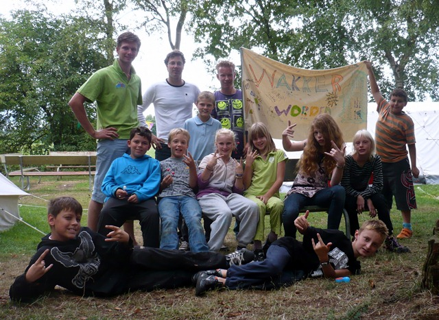
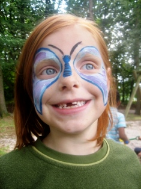
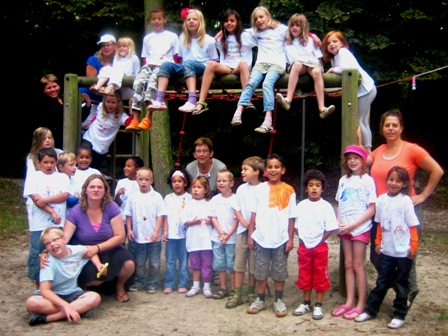

Moeder-Kindkamp
Wat is het?
Het Moeder-Kindkamp is een volle week vakantie voor alleenstaande moeders en hun kinderen. Kinderen en moeders beleven beide hun eigen vakantieweek, maar zullen ook momenten samen delen. Onze kampen worden georganiseerd vanuit de Unie van Baptistengemeenten en heeft een christelijke grondslag.
Elke moeder krijgt een slaapkamer in het kamphuis, deze wordt gedeeld met één andere moeder. Het wordt een week lang genieten van de natuur en tot rust komen.
De jongen kinderen verblijven in het kamphuis daarnaast, met een eigen team van leiders. De oudere kinderen verblijven in tenten op het terrien, ook zij hebben een eigen team van leiders.
Het Moeder-Kindkamp wordt georganiseerd voor alleenstaande moeders met hun kinderen, die financieel niet daadkrachtig zijn om op vakantie te gaan. Bij opgave zal er contact opgenomen worden of je past binnen onze doelgroep.
Waarom doen we dit?
De Unie van Baptistengemeente meent dat een groot aantal moeders in Nederland om verschillende redenen niet in staat is om voor zichzelf en hun kinderen een leuke vakantie te plannen.
Daarom hebben wij de handen in elkaar gevouwen en vanuit maatschappelijke betrokkenheid en ons christelijk geloof willen wij deze gezinnen een mooie vakantieweek bieden. In Noorwegen en Zweden loopt dit soort vakanties al een aantal jaren. Daar komt ook het allereerste idee vandaan.
Belangrijk!
Vanwege de verwachte belangstelling zal er hoogstwaarschijnlijk een loting plaatsvinden voor het Moeder-Kindkamp. Geef je op vóór 1 mei 2011, want op die dag zal de loting plaatsvinden. Bij deze loting krijgen 'nieuwe' gezinnen voorrang boven gezinnen die het Moeder-Kindkamp 2010 bezocht hebben. Het Moeder-Kindkamp zal plek bieden voor twintig gezinnen.
Kosten
Per gezin kost het Moeder-Kindkamp € 100,-, ongeacht het aantal kinderen dat mee komt.

De moeders
Twintig moeders bieden wij een plek in de bosrijke omgeving van de Strubben (Drenthe). We hopen dat de moeders tot rust kunnen komen in de kampweek en even ontlast worden van de zorg voor hun kinderen. Het is niet zo dat de moeders 24 uur per dag hun tijd zelf inplannen. Er is elke dag een programma waarbij we verwachten dat alle moeders deelnemen. Daarnaast is er elke dag anderhalf uur tijd ingepland waar de gezinnen even samen hun tijd kunnen nemen om een wandeling te maken, een spelletje te doen en bij te kletsen over wat er allemaal beleefd wordt.
De moeders vinden vaak in elkaar een gezellige gesprekspartner of een luisterend oor. Er is ook leiding aanwezig. Zo is er een keukenploeg die de gehele week de maaltijden verzorgd, maar er wordt wel verwacht dat er geholpen wordt met kleine klusjes als tafel dekken en afwassen. Moeders en kinderen eten ieder in hun eigen kamphuis.
Activiteiten die hoogstwaarschijnlijk op het programma staan zijn bijvoorbeeld wandelen of fietsen door het bos, een heerlijk viergangendiner, een verwenavond met schoonheidsspecialiste, een sportmiddag met de kinderen, een creatieve middag, filmavond en daarnaast themamomenten waarbij we met elkaar in gesprek gaan en de Bijbel openslaan.
De jonge kinderen

Kinderen vanaf 4 jaar zijn welkom op ons kamp. We logeren in een kamphuis met stapelbedden. We verdelen de kinderen in twee groepen, zodat we de activiteiten kunnen afstemmen op belevingswereld en niveau.
De zorg voor de kinderen ligt compleet bij de leiding, die bestaat uit vrijwilligers die vanuit hun werk of opleiding kennis hebben van omgang met kinderen. Ontbijten, lunchen en dineren doen de kinderen ook in hun eigen kamphuis met de leiding.
Elke dag zal er ’s morgens aandacht besteed worden aan een verhaal uit de Bijbel waarbij we zingen, knutselen, toneelspelen of spelen. De middag kan elke keer anders zijn. Bij mooi weer lopen we naar de Iberenplas (ongeveer 1 km afstand van ons kamp) om heerlijk te zwemmen. Soms doen we een bosspel of schminken we de kinderen. Op woensdag gaan we samen met de moeders een dagje uit naar een grote speeltuin. Ook de kinderen moeten helpen met tafel dekken/opruimen en zijn verantwoordelijk voor het netjes houden van bijvoorbeeld de slaapzaal of het speelgoed.
Vooral voor de jongste kinderen zal er kindertheater georganiseerd worden waarbij veel gezongen wordt. De oudste kinderen sporten elke avond samen met de jongeren in een strijd om een heerlijke taart voor de weekwinnaar! Natuurlijk zullen we tijdens de kampweek ook eens aan het kampvuur gaan zitten om naar dit wonderlijke vuur te kijken en gezellig te zingen. We sluiten de week af met een bonte avond, waar de kinderen verkleed mogen komen en een act mogen doen.
De jongeren
Kinderen ouder dan tien jaar verblijven op hetzelfde terrein met hun eigen leiding in een tentenkamp. Een luchtbed, kussen en slaapzak moeten de kinderen zelf meenemen. Midden in het bos beleven de tieners een gezellige week met elkaar. Er is veel tijd voor bewegen: een bosspel, lekker zwemmen in de Iberenplas of sporten.
Daarnaast wordt er ook vanuit een thema met elkaar gesproken over wie je bent en wat je vindt. Als christelijke organisatie willen we met de kinderen op zoek gaan naar God in de Bijbel of juist in toneel, spel, discussie, creatieve opdrachten of in muziek.
's Avonds warmen we ons aan het kampvuur tot we moe worden en in onze slaapzak kruipen om de volgende dag weer een nieuw avontuur te starten. Je weet maar nooit wat er op het programma staat: een spannende nachtelijke dropping, een oerspannend bosspel of een dagje heerlijk ontspannen in een hangmat tussen de bomen!
De tieners hoeven niet zelf te koken, maar er wordt wel verwacht dat ze helpen met bijvoorbeeld tafel dekken, afwassen, hout sprokkelen of opruimen. De kinderen kunnen ook wat zakgeld meenemen om in het 'winkeltje' een lekker snoepje te kopen om bij het kampvuur 's avonds op te snoepen.
Op woensdag zullen de gezinnen een dagje uit gaan naar een grote speeltuin in de buurt, waar ook voor de tieners genoeg uitdagende activiteiten te ondernemen zijn. De laatste avond sluiten we af met een bonte avond, waar de kinderen een act kunnen doen.
